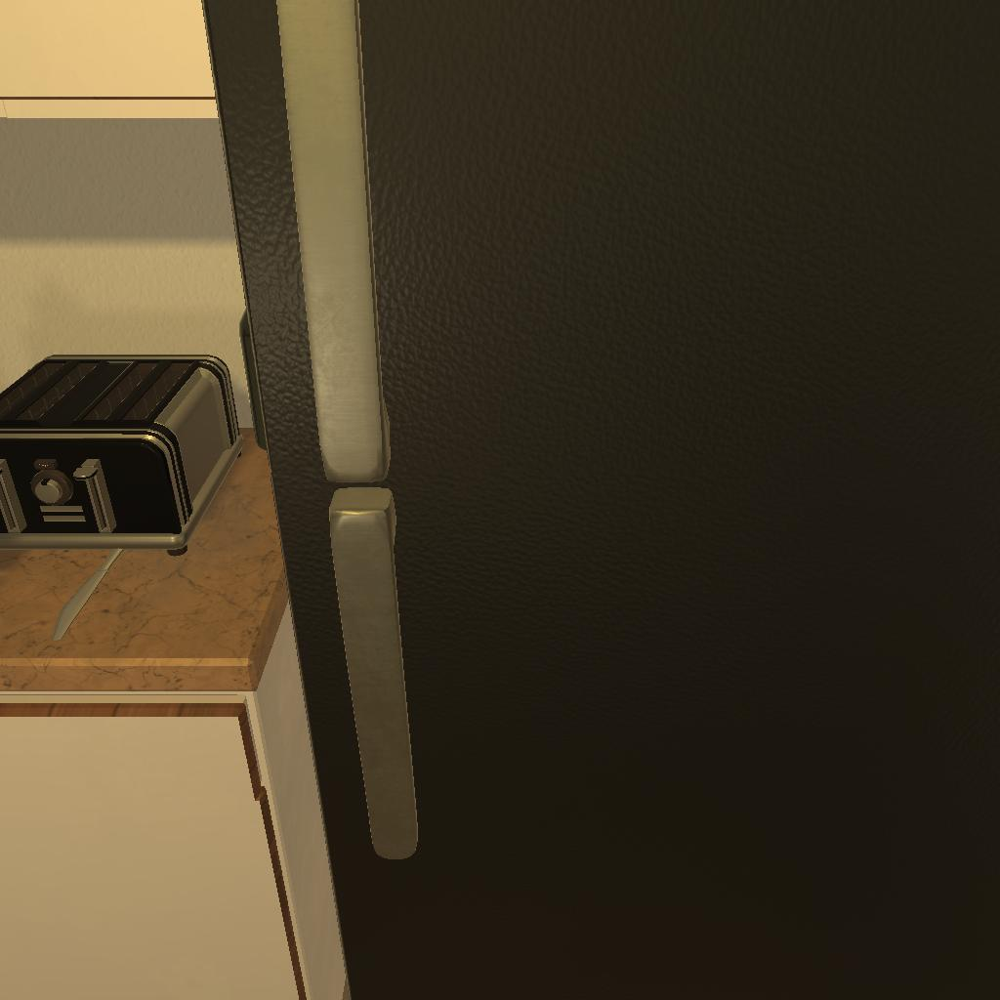

---------------------------------------------------------task: 14---------------------------------------------------------
--------------------------------------------------------------------------------------------------------------------------------------------------------------------
--------------------------------------------------------------------------------------------------------------------------------------------------------------------
Step:--------------------------------------------------------------------------1-------------------------------------------------------------------------------
----------------------------------------
VLM Prompt:
**Task**
Please perform as an embodied AI agent. Our final objective is to put a cool apple in countertop. Below is the plan for completing the task, the current observation, alongside historical data and admissible actions for the next step. Please determine the best action for the next step!
**Plan**
Below is a detailed step-by-step plan to complete the task.
1. Find an apple.
2. Pick up the apple.
3. Find a fridge.
4. Cool the apple with the fridge.
5. Find a countertop.
6. Place the cooled apple on the countertop.
**Current Observation**
Displayed is an image capturing the current position of the agent.
**History Information**
Displayed are the previous observations with their corresponding actions.
Current State 1:
1. Place: Unspecified location with two sinks, a glass, and a curtain
2. Step Index in Plan: 1
3. Objects: Two sinks, a glass, curtain
4. Action: Go to fridge 1
**Admissible Actions**
(1): go to microwave 1
(2): go to countertop 1
(3): go to cabinet 1
(4): go to diningtable 1
(5): go to drawer 1
(6): go to sink 1
(7): go to cabinet 2
(8): go to cabinet 3
(9): go to sinkbasin 1
(10): go to cabinet 4
(11): go to cabinet 5
(12): go to drawer 2
(13): go to countertop 2
(14): go to toaster 1
(15): go to cabinet 6
(16): go to stoveburner 1
(17): go to cabinet 7
(18): go to stoveburner 2
(19): go to stoveburner 3
(20): go to stoveburner 4
(21): go to drawer 3
(22): go to cabinet 8
(23): go to cabinet 9
(24): go to cabinet 10
(25): go to coffeemachine 1
(26): go to cabinet 11
(27): go to garbagecan 1
(28): open fridge 1
(29): close fridge 1
**Analysis Guideline**
1. Analyze the **History Information** and determine our current step in the plan and our current place.
2. List all visible objects related to the task in the current observation.
3. Analyze the objects in the current observation based on the history and the requirements for the current step, and then determine if we can complete the step with the current observation.
4. Analyze and decide on the most appropriate action to take.
5. Summarize the analysis using the following format: "Analysis: [The summarization of the analysis], The Most Appropriate Action: (i which is the integer.): [Selected action]"
**Notes**
1. We must complete each step of the plan in order and cannot skip steps when the previous ones are not finished.
2. For "Go to" actions listed as "go to xxx [n]", interpret this as there are n distinct actions available: "go to xxx 1", "go to xxx 2", ..., "go to xxx n". Select one specific action from these options instead of using "go to xxx [n]".
3. If receptacles such as drawers, cabinets, and so forth are closed in the current observation, we may try to open them.
4. Pay attention to synonyms and ensure clarity in the terms used.
5. If there is no history available, we are at the first step and the current place is "Unknown".
6. The most appropriate action must be in the **Admissible Actions**, and we cannot generate a new action that is not in the **Admissible Actions**.
**Answer**
Please select the most suitable action by following the **Analysis Guideline**, keeping the above **Notes** in mind.
----------------------------------------
----------------------------------------
VLM Response:
Analysis: The History Information shows that the last action taken was "Go to fridge 1", which implies that the current step in the plan would be to cool the apple with the fridge. However, the current observation doesn't show an apple, meaning we cannot proceed to cool the apple yet, as we haven't completed step 2 (picking up the apple). The image shows what appears to be the side of a fridge, so we are in the correct place for later steps, but need to find an apple first. No other objects related to the task are visible in the current observation.
The Most Appropriate Action: (28): open fridge 1
This action is chosen as it aligns with our current place next to the fridge and may reveal an apple inside to complete step 1 and proceed to step 2.
----------------------------------------
----------------------------------------
>>> Refine VLM Response and Get Pure Action: open fridge 1
This action is chosen as it aligns with our current place next to the fridge and may reveal an apple inside to complete step 1 and proceed to step 2
----------------------------------------
-----------------------------------------------------------------
Running time: 9.093206405639648 seconds
Total Money: 6.5521499999999975
-----------------------------------------------------------------
-----------------------------------------------------------------
Summarization Prompt:
**Context**
Analysis: The History Information shows that the last action taken was "Go to fridge 1", which implies that the current step in the plan would be to cool the apple with the fridge. However, the current observation doesn't show an apple, meaning we cannot proceed to cool the apple yet, as we haven't completed step 2 (picking up the apple). The image shows what appears to be the side of a fridge, so we are in the correct place for later steps, but need to find an apple first. No other objects related to the task are visible in the current observation.
The Most Appropriate Action: (28): open fridge 1
This action is chosen as it aligns with our current place next to the fridge and may reveal an apple inside to complete step 1 and proceed to step 2.
**Summary Format**
1. Place: [Specify the current location]
2. Step Index in Plan: [Dispkay the current step number in the plan before taking the current action]
3. Objects: [List the objects relevant to the task]
4. Action: [Describe the most appropriate action without the "(x)" and keep the integer of the object]
Please analyze the **Context** and summarize the analysis using the **Summary Format**.
-----------------------------------------------------------------
-----------------------------------------------------------------
Summarization Response:
1. Place: Next to fridge 1
2. Step Index in Plan: Step 2
3. Objects: Fridge 1
4. Action: Open fridge 1
-----------------------------------------------------------------
-----------------------------------------------------------------
Text Observation:Nothing happens.
-----------------------------------------------------------------
UNSUCCEED